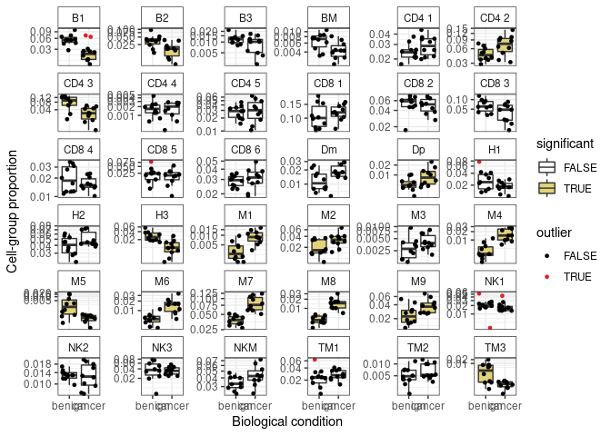
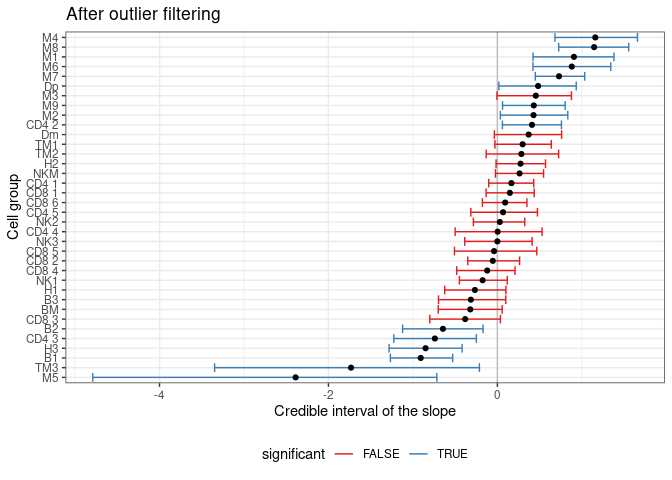
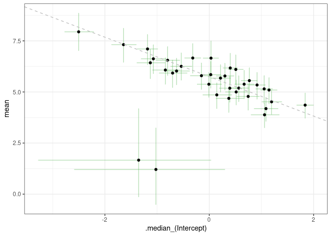

sccomp - Outlier-aware and count-based compositional analysis of single-cell data ================
Installation
devtools::install_github("stemangiola/sccomp")Analysis
From Seurat Object
res =
seurat_obj |>
sccomp_glm( ~ type, sample, cell_group )
res =
sce_obj |>
sccomp_glm( ~ type, sample, cell_group)From data.frame
res =
seurat_obj[[]] |>
sccomp_glm(~ type, sample, cell_group )From counts
res =
counts_obj |>
sccomp_glm(
~ type,
sample, cell_group, count,
approximate_posterior_inference = FALSE
)## sccomp says: outlier identification first pass - step 1/3 [ETA: ~20s]
## sccomp says: outlier identification second pass - step 2/3 [ETA: ~60s]
## sccomp says: outlier-free model fitting - step 3/3 [ETA: ~20s]Visualise data + inference
data_for_plot =
res |>
tidyr::unnest(count_data ) |>
group_by(sample) |>
mutate(proportion = (count+1)/sum(count+1)) |>
ungroup(sample)
ggplot() +
geom_boxplot(
aes(type, proportion, fill=composition_prob_H0<0.025),
outlier.shape = NA,
data = filter(data_for_plot, !outlier)
) +
geom_jitter(aes(type, proportion, color=outlier), size = 1, data = data_for_plot) +
facet_wrap(~ interaction(cell_group), scale="free_y") +
scale_y_continuous(trans="logit") +
scale_color_manual(values = c("black", "#e11f28")) +
scale_fill_manual(values = c("white", "#E2D379")) +
xlab("Biological condition") +
ylab("Cell-group proportion") +
theme_bw() +
theme(strip.background =element_rect(fill="white"), legend.position = "bottom")
Visualise credible intervals of slope parameter
res |>
unnest(composition_CI) |>
ggplot(aes(x=`.median_typecancer`, y=fct_reorder(cell_group, .median_typecancer))) +
geom_vline(xintercept = 0.2, colour="grey") +
geom_vline(xintercept = -0.2, colour="grey") +
geom_errorbar(aes(xmin=`.lower_typecancer`, xmax=`.upper_typecancer`, color=composition_prob_H0<0.025)) +
geom_point() +
scale_color_brewer(palette = "Set1") +
xlab("Credible interval of the slope") +
ylab("Cell group") +
theme_bw() +
theme(legend.position = "bottom")
Visualise relation between proportion mean and overdispersion. The regression line is inferred by sccomp.
mean_concentration_association = res %>% attr("mean_concentration_association")
res |>
unnest(composition_CI) |>
unnest(concentration) |>
ggplot(aes(`.median_(Intercept)`, -mean)) +
geom_errorbar(aes(ymin = -`2.5%`, ymax=-`97.5%`), color="#4DAF4A", alpha = 0.4) +
geom_errorbar(aes(xmin = `.lower_(Intercept)`, xmax=`.upper_(Intercept)`), color="#4DAF4A", alpha = 0.4) +
geom_point() +
geom_abline(intercept = mean_concentration_association[1], slope = mean_concentration_association[2], linetype = "dashed", color="grey") +
xlab("Category logit-proportion mean") +
ylab("Category log-overdispersion") +
theme_bw() 
Posterior predictive check
We can perform posterior predictive checks of the model. This gives information of how the model “interprets trends” in the data, and gives confidence on the estimates. The blue shades are the model generated data.
data_proportion =
res |>
unnest(count_data) |>
select(cell_group, sample, outlier, count, type, composition_prob_H0) |>
with_groups(sample, ~ mutate(.x, proportion = (count)/sum(count)) )
simulated_proportion =
res |>
replicate_data(number_of_draws = 10) |>
left_join(data_proportion |> distinct(type, sample))## Joining, by = "sample"
ggplot() +
geom_boxplot(
aes(type, generated_proportions),
outlier.shape = NA, alpha=0.2,
data = simulated_proportion, color="blue"
) +
geom_jitter(aes(type, generated_proportions), color="blue" ,alpha=0.2, size = 0.6, data = simulated_proportion) +
geom_boxplot(
aes(type, proportion, fill=composition_prob_H0<0.025),
outlier.shape = NA,
data = filter(data_proportion, !outlier)
) +
geom_jitter(aes(type, proportion, color=outlier), size = 1, data = data_proportion) +
facet_wrap(~ interaction(cell_group), scale="free_y") +
scale_y_continuous(trans="logit") +
scale_color_manual(values = c("black", "#e11f28")) +
scale_fill_manual(values = c("white", "#E2D379")) +
xlab("Biological condition") +
ylab("Cell-group proportion") +
theme_bw() +
theme(strip.background =element_rect(fill="white"), legend.position = "bottom")